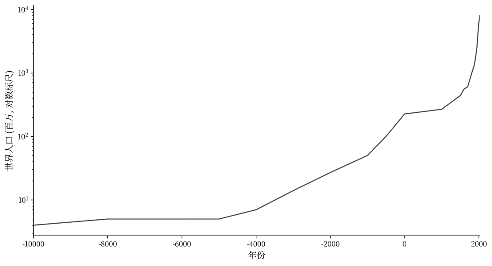
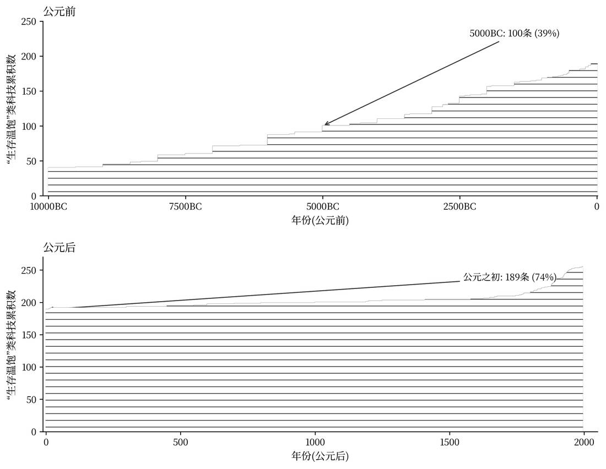
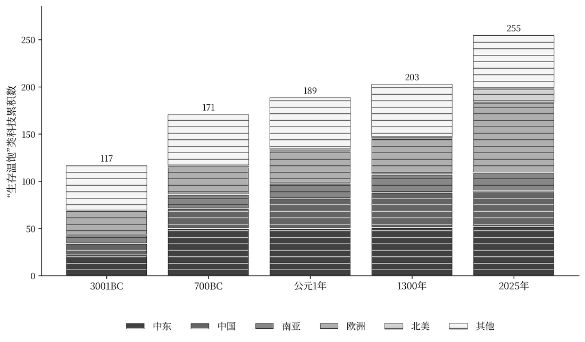

人类怎样改变获取食物、抵御寒冷的方式？生存与温饱的创新如何扩大了可利用的资源，支撑了人口繁衍？
生存是所有动物最基本的需求，人类则通过不断创新，改变了获取食物、抵御寒冷的方式。过去几万年，这些努力也逐渐改变了地球的面貌。
智人携带工具和用火等技术走出非洲，一边迁徙，一边繁衍，逐渐扩散到全球各地。新的环境带来新的挑战，也催生了不同的生存本领。
随着定居与农业的发展，人们开荒拓土，将大片土地变成农田和牧场。村落、道路和水利设施逐渐铺展，原有的自然景观随之改变。
为了获得更多食物，人们不断选择和培育作物。各地驯化的植物经迁徙与贸易传播，玉米、水稻、小麦等逐渐成为许多地区的主食。
水土合适，庄稼才能长得好。人们修筑水坝、水库和渠道，把水引向农田，也在长期实践中积累了灌溉和治水的经验。
从生食到熟食，从简单烤制到丰富的烹调，人间烟火中处处可见创新。陶器、锅灶、加工工具和调味品，使食物更便于储存、处理和享用。
吃饭为了饱腹，穿衣为了御寒。人们利用麻、棉、毛、丝等天然纤维，发展纺织技术，后来又发明合成纤维。衣服和被褥满足日常需要，服饰的色彩、花纹与样式也成为各地文化的重要符号。
生存与温饱技术扩大了人类能够利用的资源，也提高了土地承载人口的能力。智人走出非洲后的数万年间，迁徙使人们进入更多地区，获得新的野生动植物资源。一万多年前，农业陆续在不同地区兴起，栽培、驯养和储存技术使食物供应逐渐增加。此后，灌溉、耕作工具和种植方法不断改进，支撑了更密集的人口和更复杂的社会。
近几百年，大航海推动了玉米、马铃薯等美洲作物的全球传播，扩大了许多地区的食物来源。农业现代化进一步提高产量，医疗与公共卫生改善则降低死亡率、延长寿命，共同推动人口迅速增长。联合国估计，2024年世界人口已达约82亿。
图II-1 过去一万多年世界人口的发展趋势。横轴为年份，纵轴为世界人口数，采用对数标尺。

数据来源：Angus Maddison《世界经济历史统计》，2010；公元前数据据McEvedy与Jones的估计值插值整理。
本书数据库收录的“生存温饱”类重大科技成就中，约四成出现于公元前5000年及更早时期，主要集中在农业革命时期。此后数千年间，耕作、灌溉和食物加工等技术继续积累；至公元之初，累计条目已占该类总数的约74%。这些早期首创奠定了生存与温饱技术的基本格局。近几百年的机械化、育种和生产方式变革，又大幅提高了这些技术的效率与规模。
图II-2 过去一万多年“生存温饱”类重大科技成就的累计趋势。

数据来源：重大科技成就数据库。
早期生存与温饱技术具有鲜明的地域特征。可供驯化的野生物种、气候和水土条件，影响了各地农业的内容与发展节奏。新月地带是农业最早兴起的地区之一，南亚、中国等地也形成了各自的农业传统，农耕技术随后沿交流网络传播。本书的欧洲统计区域包括小亚细亚；图II-3中截至公元前三千纪的欧洲条目，近半数来自小亚细亚，即今土耳其一带。农业革命历时漫长，作物、饮食和生产方式逐渐融入各地的文化。
水稻栽培、陶器烧制等技术，支撑了人类的繁衍生息，也为后来的创新提供了基础。丝绸则展示了技术用途的延伸：丝织品兼具衣着、审美和身份表达功能，其价值又推动了远距离贸易。本书据其主要社会用途，将丝绢归入“交流娱乐”类；第4章“丝绸之路上的阴谋与传奇”将展开这一故事。近两百年，欧美推动的农业与纺织技术现代化，经传播和本地改进，逐渐进入世界各地的生产与生活。
图II-3 若干历史时点各地区“生存温饱”类重大科技成就的累计数量。

数据来源：重大科技成就数据库；地域分类见附录。
从走向全球、开垦土地，到烹调食物、纺织衣物，人类围绕生存与温饱展开了漫长的创新实践。这些创新支撑人口繁衍，催生贸易与社会分工，也使吃饭穿衣逐渐超越维持生命的基本需要，发展出各具特色的饮食与服饰文化。
本文选自《欲望的力量：人类科技创新简史》（第二版）第二编“必需篇 生存与温饱”导言——生存温饱创新：必需篇导言。上一篇：重大创新结构：人口规模与科技创新（续）；下一篇：第 1 章 非洲的智人与变化的环境（待续）。连载总索引见《欲望的力量》连载总索引。